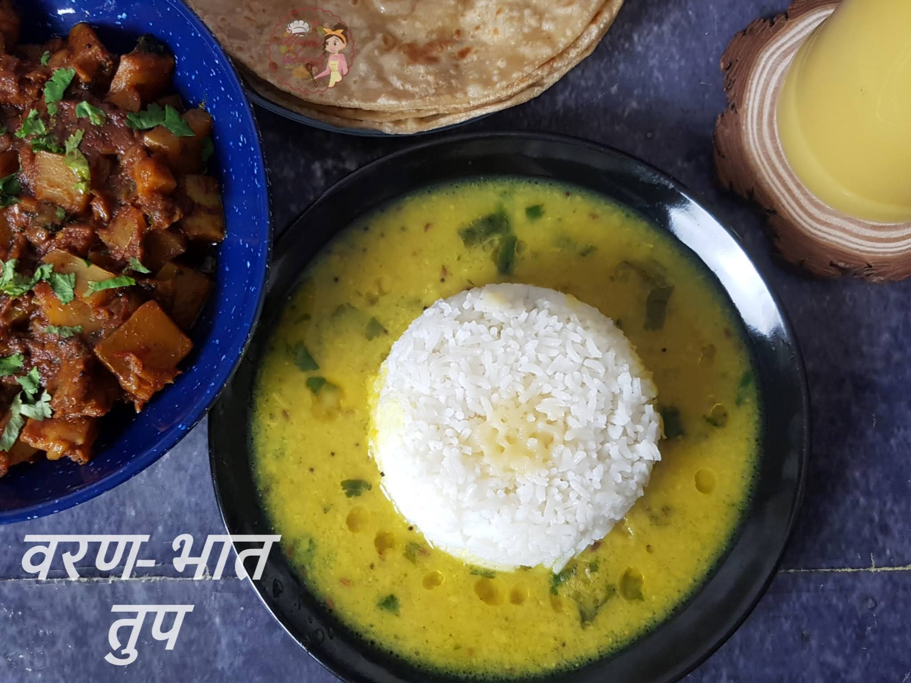

Varan Bhaat

Varan Bhaat is a simple and quick Maharashtrian style dal (lentils curry) and rice recipe.
The Maharashtrian dish Varan Bhaat holds a special place in my
heart as it evokes nostalgic memories of my childhood spent with cousins,
enjoying hearty meals of VBT (Varan-Bhaat-Tup) paired with freshly pickled mango.
It's amazing how food and memories are intertwined and can transport us back in time.
This simple yet satisfying meal is a significant part of Maharashtrian
identity and always makes me feel like I'm back home.
The tender mutton once coated and cooked in the masala, will literally fall off the bone,
a dish that you will want to make for your family this weekend.
Ingredients
- 1 Cup Split Pigeon Peas Dal/Split Moong Dal(Lentils)
- 1 Tsp Turmeric
- 1 Pinch Asafetida
- 5 Green chilies, chopped
- 1 Tsp Cumin seeds
- 2 tbsp of oil
- Salt to taste
- 2 tbsp of fresh coconut
- 1/2 inch ginger
- 2 Cups Water
- 1 Cup Rice + 1 ½ Cup Water + Salt to taste
- 2 tbsp Ghee for topping
Steps
- First prepare the vaatan and keep aside
- In a frying pan lightly roast coconut and onion until light golden in color
- Set aside to cool
- Transfer it to a blender
- Add 3/4 cup of water and blend it to a fine paste
- Heat oil in a pressure cooker. Add jeera and chopped onion.
Saute the onion until golden brown.
- Now add the mutton pieces.
Add salt, turmeric and mix it properly.
- Add water and pressure cook until 10 whistles or approx 30 mins.
- Switch of the heat. Once the pressure has subsided remove the lid of the cooker
- Heat oil in another pan, fry vaatan paste with malvani masala and garam masala
- Fry the vaatan and masala mixture till it leaves oil and darkens in color
- Add vaatan mix in the pressure cooker
- Cook on slow/medium flame for another 15 mins until the coconut paste has
completely blended and the curry becomes thick.
- Remove from heat. Garnish with chopped coriander.
- Serve hot with some rice or naan.